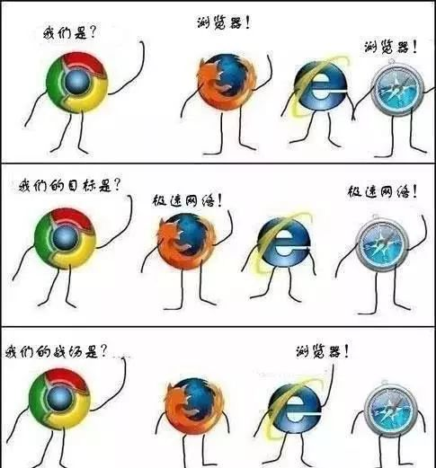
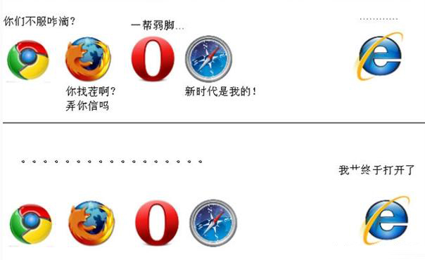
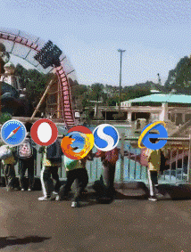
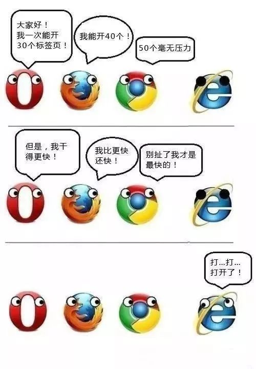
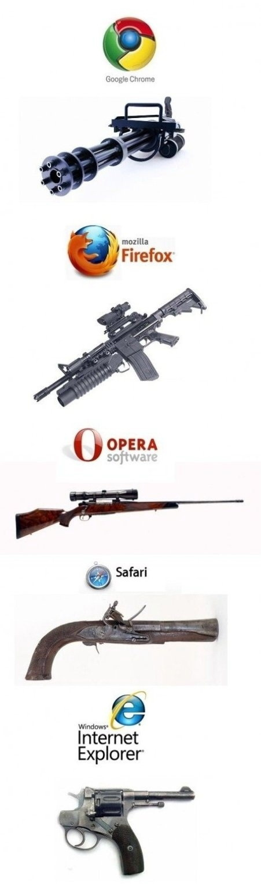
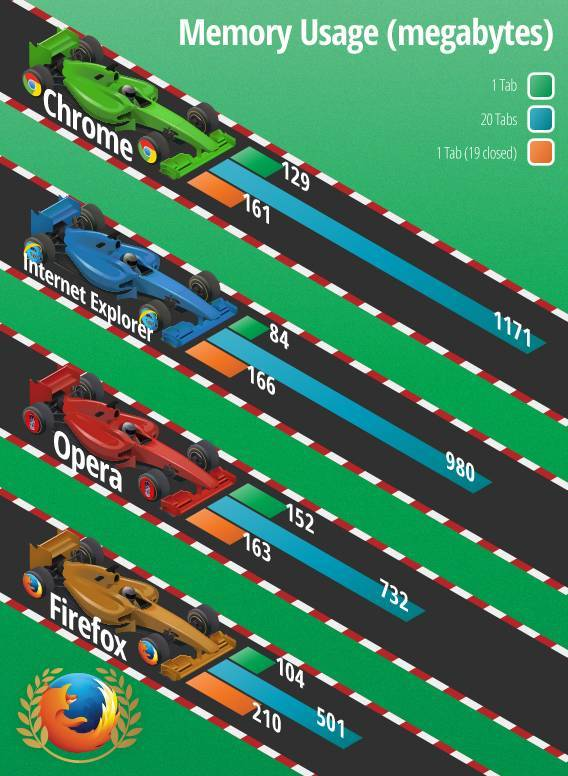

IE的诞生与崛起 Netscape霸主地位被夺
一个“古老的传说”
Long, long ago ，世界上第一个浏览器WorldWideWeb诞生在了1990年（嗯有些网友还没出生呢）。 而第一个获得普及的使用的浏览器则是由NCSA开发的Mosaic浏览器。它的第一版于1993年4月22日发布，NCSA Mosaic促进了因特网的迅速发展。成为了史上第一款获得普遍使用的浏览器。
Mosaic浏览器（图片来源网络）
后来，NCSA中Mosaic项目的负责人Marc Andreesen辞职并建立了网景通讯公司，并在1994年10月发布了他们的旗舰产品Netscape Navigator（导航者）。 而Netscape在此后的一段时间里，成为了浏览器的代名词。
Netscape浏览器（图片来源网络）
IE初生 嗷嗷待哺
盖茨刚开始完全不在乎，但随着网景风头渐盛，他惊觉，如果自己再不重视，可能会错失巨大的流量入口，且微软的操作系统会永远受制于「互联网」。起先，盖茨也想将网景收入麾下，派人谈判、想注资、进董事会，没想到网景不干，整盘计划落了空。1995年微软与一家名为Spyglass的小公司缔结协议，授权使用Spyglass的Mosaic浏览器（全球最早可显示图片的浏览器之一）。最终微软将其捆绑到自己的Windows 95 Plus Pack中并供用户免费使用，从此掀起了微软和网景之间的浏览器大战的序幕。 由于免费策略，而当年的浏览器大多还是收费的，IE浏览器的推出就受到了用户的关注。不过幼小的IE尚未能与Netscape相庭抗争。就这样IE 1.0成为了微软的首款浏览器。
IE1（图片来源网络）
IE1 Logo（图片来源网络）
使用过Windows 95的网友应该不多，不过也不乏从DOS时代开始接触电脑的老鸟们，让我们看看Windows 95长什么样
Windows 95界面（图片来源网络）
当年在Windows 95推出的时候，微软特意请来了最热美剧《老友记》里面的Rachel和Chandler拍了一段小的短片，各种教导童鞋们使用Windows 95的各种相关信息
就在IE的首个版本诞生不久，微软便在同年11月发布了其第二个版本IE 2.0。相比前版，IE 2.0最大的变化就是参考了当时最热门浏览器——网景Netscape浏览器的相关设计。要知道当年很多网站都只为兼容网景Netscape浏览器而开发，这一技术门槛几乎成为其他浏览器难以逾越的一道槛。不过在微软的努力下，最终IE还是实现了与网景Netscape浏览器几乎一致的网页渲染效果，并且首次加入了SSL新闻组支持，这就大大的有利于IE的普及。
逐渐成长 力抗霸主
微软在一年后的发布的IE3，显得更加的稳重与强悍。相比前版，IE3增加了很多功能，包括CSS架构、ActiveX、Java小程序、微软NetMeeting和Internet Mail等。最富实用性的，是它终于可以显示JPEG及GIF图片。此外IE3还可以在没有插件的情况下直接处理流式音频，这在当时，也算是颠覆性的一项进步。IE 3还率先支持了CSS等技术，凭此盖过了主要竞争对手网景Netscap浏览器的风头。IE在此战役中初露雄风。
当然，为了尽快地提升IE的市场占有率，微软当时通过一些商业手段来打压网景浏览器，这些手段包括打包分发、免费提供、通过商业条款迫使合作伙伴默认采用、网页标准垄断等。总之，IE凭借种种力量逐步站稳脚跟，开始与网景Netscape浏览器相抗衡之路。
IE3.0（图片来源网络）
顺便说一句，IE3首次拥有了字母“E”图标，最终这个Logo成了IE的经典代表。
IE3 LOGO（图片来源网络）
紧接着微软在1997年10月正式发布了IE 4.0。IE开发团队为表示庆祝,在网景公司门前的草坪上树起了一座10英尺高的字母“e”雕像。IE4是微软首款能在Win95、Win98、WinNT上同时运行的浏览器软件。相比IE3，IE4一个最大进步就是新增加了Active Desktop（就是当年常说的“活动桌面”，而当时的开机显示还原Active Desktop也是个经典的困扰用户故障之一）和DHTML支持，这两项功能使得网页开始由静态走向动态，继而开启了一个全新的WEB设计时代。
IE4（图片来源网络）
来谈个小花边，下图是著名的IE4.0踩场事件的图片。1997年10月一天夜里，微软员工在网景总部楼前草坪上树立了一个大型的微软IE徽标。第二天，网景员工放倒了它，并让自己Mozilla玩偶造型踩了上去。是的，当年IE4.0和网景的竞争就是如此的火药味。

（图片来源网络）
IE4.0的推出，可以说是对网景Netscap浏览器的重大威胁。在技术上，IE4在很多方面已经比当时的网景Netscape Navigator 4.0要好。同时，从Windows 95 OSR2开始，IE被捆绑作为所有新版本的Windows操作系统中的默认浏览器，并且还是免费的，这就使得Netscape的份额渐渐被蚕食。不过微软的日子并没有好过，因为在操作系统中捆绑IE，被以垄断的罪名告上了法庭，一度被主审法官杰克逊裁定要拆分成一个做操作系统的公司和一个做应用软件的公司，官司拖沓了好几年，不过最终事情也以和解的方式不了了之。
击败对手 取而代之
对比着Windows95，Windows98就有着更多的网友曾经使用过，它是许多网友第一次与网络亲密接触的平台，而那个大大的E也就成为了上网的首选浏览器。
接下来，IE5在1999年发布，IE5.5和IE6在2001年发布。而因为Netscape6的滑铁卢（用户们对这一最新版本表示强烈不满，因为他们认为该软件还没有全部完成，公司将不成熟的产品推出门外是不合适的。用户的指责涉及该软件的多个方面，比如说其中包括稳定性太差、运行速度缓慢、网页显示效果不佳、缺乏围绕商业用途开发的功能、以及缺少键盘功能和对即插即用外围设备的支持等等的纰漏。），使IE的地位进一步巩固，到2002年一度达到了如日中天的96%占有率。而当时唯一的竞争对手Netscape的占有率已跌至无法挽回的地步，这场浏览器战争以IE完胜告终。
Netscape6启动画面（图片来源网络）
IE5.0（图片来源网络）
1998年11月Netscape被AOL（美国在线）收购，因此，Mozilla.org起初一直在AOL的资助下进行研发活动。作为和微软和解的一部分，2003年7月15日，，AOL解散了 Netscape，一个传奇永远的结束了（如今的Netscape浏览器由Mercurial Communications开发）。同时，非盈利性机构Mozilla基金会也在这一天成立。AOL中止了与Mozilla.org的关系，将资助的任务转交给了新成立的非盈利性的Mozilla基金会。美国在线向基金会转移了相关硬件和知识产权，并给予其200万美元的初始赞助基金。微软新对手谷歌也和该基金会签订协议，通过在其浏览器右上方设置谷歌的搜索条，产生广告收入，这一度成为基金会85%的收入来源。
AOL毁掉的经典软件有哪些（图片来源网络）
奠定浏览器霸主地位 上网就是那个E
Windows 98SE的辉煌 IE5的幸运平台
打败了网景Netscap浏览器浏览器后，IE开始数年之内统领并主宰整个浏览器市场。由于Windows系统的主宰地位和竞争对手的匮乏，IE的市场份额节节攀升。根据某网站的统计数据显示，到2002年4月份，IE的市场份额高达96.6%。
1999年3月发布的IE5被正式集成在着名的Win98 SE（Win98 第二版）上。和上一代IE4相比，IE5的性能更加卓越，稳定性也大幅提高，最关键的是它增加了对AJAX的支持，大大降低了服务器与浏览器的数据交换量。另一方面IE5也成为最后一款运行于16位指令集上的IE浏览器，同时也是最后一版Macintosh客户端IE。此后一年，微软又推出了过渡版的IE 5.5。虽然新版并没有为普通用户带来多少变化，但却让开发者享受到了比以前更快捷丰富的网页应用服务，2000年发布的Windows Me直接预装了这一版本。
Windows 98 se（图片来源网络）
Windows 98SE的推出，让许多用户雀跃不已，它一度成为了用户的首选操作系统，并且也成为了Windows ME和 Windows XP的绊脚石，许多用户就像今日留恋Windows XP那样的留恋着它，而不愿升级到新一代的操作系统。而IE5也成了冲浪必备的浏览器，拨号上网时代，网页聊天室、bbs等等的初级社交。网络资源的下载、新闻的浏览，许多用户都是通过它完成的。
IE5（图片来源网络）
IE5Logo（图片来源网络）
寿命长到让微软自己也头痛的IE6
接下来就是在国内以至世界上最流行的操作系统Windows XP的诞生，起初它曾经一度不被用户所接受，因为它的新操作界面与硬件配置要求。可是没有想到的是后来它竟成为了最流行的操作系统，乃至今日，依然有不少用户仍在使用。伴随着Windows XP到来的IE6浏览器，估计也是国内使用人数最多的浏览器之一了。和IE5相比，IE6增强了对DHTML、CSS1、DOM1及SMIL 2.0的支持，同时MSXML也升级至3.0版。针对用户方面，IE6增加了图片大小自动调整、集成了Windows Messenger等小模块，经典的Logo也首次采用扁平风，称得上是最早一款使用扁平化设计的程序图标了。点E就能上网，也就成了许多人的认知过程。
“点击桌面上的E就能上网”你初学电脑的时候是否听过这么一句话？
2013年微软公布的IE6仍在使用占有率情况
不过由于IE6漏洞太多、安全性能差、对W3C标准的支持也不好，被2006年的《PC World》杂志评选为“史上最糟糕的科技产品“。
有调查显示IE6.0发布后的10年后的全球仍然有70%的用户在使用着它，这极大程度上限制了互联网的发展，连当时的微软都在头疼如何让用户把IE浏览器升级到最新版本。而当时抱怨声最大的莫过于网页开发者们，因为他们不得不花费大量时间去为一款10年前的老浏览器做调试，之后去忍受它复杂而缓慢的浏览核心。而在国内关闭了Windows update的Ghost XP盗版系统中就更加不用指望用户会升级IE了。（Windows XP最高支持IE8）
IE 6的辉煌事迹还有，在其诞生后的十年乃至现在除了要与Mozilla火狐、谷歌Chrome、苹果Safari、Opera等其他公司浏览器竞争外，还需要与IE 7、IE 8以及IE 9等自家产品进行一番较量。不过到了现在已经是该退休的时候了，部分网站已经不支持IE6浏览。由于IE6不兼容最新的网页标准，却在中国拥有大量用户，页面工程师不得不为每一个页面开发两套代码。在开发圈儿里，IE6被称为“程序员的梦魇”，有人甚至发起“杀死IE6”的庆祝活动。
部分网站已经不支持IE6浏览
IE6 Goodbye（图片来源网络）
微软：求求你了用新版可以么？（图片来源网络）
不思进取 吃老本能行么？
自从推出了IE6之后，虽然微软断断续续的为它推出过升级补丁，但是这是明显不够的，直到2005年7月，微软才推出了IE 7的第一个预览版本。这之间可足足隔了四年的时间啊，这四年也给了其它初生的浏览器了一段发展良机。
2006年在IE6发布五年后，用户终于迎来了微软的最新力作——Internet Explorer 7。IE7是Windows Vista的默认浏览器，同时也有专门的XP版下载链接，当然这些都是2001年反垄断案的结果，微软不能再将IE捆绑到自家的操作系统里。和旧版相比，IE7增加了很多功能，而且大多和用户体验有关。比方说多标签访问、支持钓鱼过滤、自定义搜索引擎、多主页设置、地址栏搜索（即不用搜索栏，直接将关键字输入地址栏也能搜索），甚至还破天荒地为中国用户开了一个小灶——支持中文域名！
Vista的遭遇请参考ME
IE7Logo
竞争对手出现 止步不前的IE
Opera领军
1996年，Opera 发布Telenor 是挪威最大的通讯公司，他们推出了 Opera，Opera浏览器因为它的快速、小巧和比其他浏览器更佳的标准兼容性获得了国际上的用户和业界媒体的认可，并在网上受到很多人的推崇。甚至在国内也有一段时间非常的热门，各大软件资讯网站的浏览器评测中都能看到它的身影，遗憾的是，最近几年它已经逐渐的淡出了国内用户的视野中。
Opera浏览器
在Opera浏览器的第一个公开发行版本里，Opera就实现了在一个窗口里同时打开多个文档——这就是现在普遍流行的“标签式浏览”的前身。又如，2001年Opera首创了“鼠标手势”，极大地改变了许多人网上冲浪的方式。
（图片来源网络）
Firefox发力
终于，那野兽倒下了，异教徒们为此而欢庆。但是一切并未结束，因为一只巨鸟已从灰烬中诞生。那鸟从空中俯视着异教徒们，向他们施放火与雷电。因为这野兽已重生为巨鸟，恢复了力量。金钱的追随者们在恐惧中后退。 ——Mozilla 书
浏览器之战失利以后，Netscape并没有消失，为了挽回市场，1998年Netscape将浏览器的大部分代码开源，成立了一个组织，计划开发下一代的 Netscape浏览器，这个组织就是Mozilla.org，它的图标是一只恐龙。不久后，Netscape的源代码就差不多被全部抛弃， Mozilla社团开发出了在稳定性和功能上更出色的新一代浏览器。这个浏览器就是Mozilla Application Suite，简称Mozilla，它是一个套件，包含了浏览器、电子邮件客户端、网页编辑器、IRC聊天等等。后来的Netscape浏览器都是以 Mozilla为核心的。
Mozilla恐龙标志（图片来源网络）
与不思进取的IE相比，Mozilla毫无疑问是一个优秀的浏览器。但是由于受到商业公司赞助的需求拖累，并且有过度开发者导向的功能蔓延， Mozilla 浏览器变得日益膨胀臃肿。2002年，戴夫海厄特(Dave Hyatt)与布雷克罗斯(Blake Ross)开始从 Mozilla 浏览器项目中分支出来的一个实验性的项目，目标是要建立一个轻便、快速、简单与高扩充性的浏览器来取代Mozilla套件。与Mozilla套件相比，它仅仅是一个浏览器，而不包括用户可能不需要的电子邮件客户端、网页编辑器、IRC聊天等等。
这个浏览器被称作"Phoenix"， 2002年9月发布了0.1版。不幸的是，由于与BIOS制造商Phoenix Technologies有商标争议，到2003年4月14日，它不得不改名。新名称"Firebird"收到了好坏不等的反应。在4月底时 Mozilla基金会发出一份声明表示应称为"Mozilla Firebird"以预防与Firebird 数据库服务器的混淆。但是来自开源社群的持续压力迫使它再一次改名， 2004年2月9日，Mozilla Firebird改名为"Mozilla Firefox"，从凤凰变成了狐狸，看来着名的Mozilla书需要写续篇了。
Mozilla Firebird（图片来源网络）
Mozilla Firefox（图片来源网络）
2004 年 6 月，一个叫「震荡波」的网络病毒利用 IE 漏洞，让全球三分之一的网络陷入瘫痪。感染上病毒，就会不断进入倒计时 1 分钟关机的死循环。进入修生养息状态的 IE，根本来不及应对这次的「震荡波」。于是，美国电脑紧急情况应对小组建议政府部门「停止使用 IE」，以防止病毒感染。
罗斯趁机展开火狐 1.0 的推广计划。网景是撑不下去了才开源代码， 火狐则是一上线就选择开源。如果有人找到 bug，可以自己迭代新版，报给火狐还能被奖励 500 美元。火狐共招揽到 50000 名志愿者，自愿帮火狐找 bug，开启了 DIY 浏览器的先河。
当时Mozilla基金会甚至通过募捐的方式，这个想法很好玩，只要你捐 10 美元，火狐就会把你的名字登在《纽约时报》上。消息从社区流出，经博客疯狂传播，有超过 10000 人为火狐捐款。在纽约时报上面刊登了整版的广告，广告左侧列出的长长的资助者的名单让为广告排版的设计师几乎崩溃。等到名单刊登，再次引发下载狂潮，连博物馆甚至五角大楼都下载起了火狐。
Firefox开始了与IE的竞争（图片来源网络）
Firefox以小巧、高效、简洁，安全，很容易扩展和定制获得了越来越多的喜爱。更重要的是，它是一个自由的浏览器，所有的源代码都是开放的，任何人可以为它的成长贡献力量。
Mozilla应用组件是一套非常强大的东西，它包含了Gecko排版引擎、XUL用户接口工具、Necko网络程式库和其他一些元件，这些东西加起来直接构成了Firefox在浏览器大战中立足的根基。Mozilla应用组件有着极大的扩展性。仗着这丰富的扩展功能，远没有微软财大气粗的甚至可以说是赤贫的Mozilla竟然用Firefox和IE战得有声有色。
2005年2月15日，比尔·盖茨终于宣布将会推出新版本的浏览器，并说明原因是IE的市场占有率逐渐被Firefox侵蚀。只不过当2006年1月IE 7第一个众测版本发布的时候，IE的市场份额已经跌倒了85.62%，而Firefox的市场份额已经增长到了11.23%。在此消彼长的发展态势背后，实际上是IE作为落后的垄断者在舆论上的失势和整个行业对于后进者Firefox的鼓励。福布斯称Firefox为“2004年最佳浏览器”，杂志《PC World》也将Firefox列入到“2005年最佳百大产品”。
Firefox对IE市场份额的侵蚀一直在持续中，但由于IE强大的用户体量和其在网页标准上的强势等因素，Firefox的侵蚀并没有达到颠覆性的效果。到了2008年，IE的市场份额跌破80%，Firefox则停留在15%到20%之间。
2006年3月，盖茨表示：“说我们在推出一款新浏览器上拖得时间太长，从某种意义上，就是承认我们犯了一个错误，”“我们将尽快频繁地推出更新版浏览器，以免夜长梦多，而被其它竞争对手分走更多市场份额。”然并卵的是，IE还刚醒悟，却又迎来了一个强劲的新竞争对手。
每每Firefox浏览器新版发布，微软IE浏览器开发团队都会向Mozilla赠送一个带有IE浏览器图标的蛋糕表示祝贺。这个有趣的举动除了一些玩笑成分，应该也体现了浏览器开发团队之间友好的良性竞争关系。不过后来Firefox开始刷起了版本号，这是想吃多点蛋糕的节奏么o(∩_∩)o,不过，微软很快就发现Firefox的更新越来越快，当Firefox的更新周期从每年发布一到二个主要版本变成为6周一更后，IE团队送的蛋糕就变得越来越小，最后干脆不送了……
2006年10月，Mozilla发布了Firefox 2.0浏览器，微软就向Firefox团队赠送了蛋糕（图片来源网络）
Firefox 3发布时，IE团队向Mozilla赠送的蛋糕（图片来源网络）
2011年3月Firefox 4发布时，IE团队向Mozilla赠送的蛋糕（图片来源网络）
2011年6月Firefox 5发布时IE团队赠送的蛋糕（图片来源网络）
2011年8月Firefox 6发布，IE送的蛋糕，这也是最后一次，以后微软就不送了……（图片来源网络）
Chrome横空出世 浏览器三分天下
强大对手出现 三分天下局面
正当IE和Firefox正在好基友你争我夺的时候，它们却没有预料到自己将会在浏览器市场面临另外一个强大的对手——Google Chrome。Firefox 与Google 多年前曾达成一项浏览器技术互相合作协定，Firefox 将预设搜寻引擎设为Google，Google 每年支付1 亿美元给Mozilla 社群，Google期望Firefox能够在浏览器市场上击败IE，好将Google的旗帜插遍互联网的每一个角落。但是好几年过去了，Firefox是给了IE不少压力，但市场份额仍然和IE有着一大截距离。Google虽然资助Mozilla，却不能直接控制Firefox的开发，而Firefox的设计理念和Google所想的又相差很远。想到指望Firefox击败IE不知是不是要等到何年何月，Google自己终于忍不住出手了。
Chrome加入战场（图片来源网络）
2008年,北京奥运会开展之际,Google正式发布首个Chrome Beta版,这次发布涉及全球100多个国家。同日,Google官方网站也提供了下载连接。凭借着Google这面大旗，在Chrome推出的首天,Google的粉丝们很快下载安装尝鲜这款新款浏览器。很快用户发现，Google有着不错的速度，也有着精简的外观。从此刻起，Google Chrome浏览器就成为了速度的代名词，而它的浏览器内核Chromium也成为了国内多核浏览器的高速核心的最佳选择。速度一流之外，Chrome对新技术是支持的最积极的一个，它的发展带动了并且加速了整个行业的浏览器更新速度。还有你别忘了它那丰富的浏览器扩展程序。
（图片来源网络）
快是Chrome的代名词（图片来源网络）
在Google深厚的互联网基因和强大的技术背景的支撑下，Chrome大受欢迎，尤其是对于喜欢追求新技术的开发者而言。2010年底，Chrome在推出两年多之后夺取了10%的市场份额。与此同时，IE的市场份额继续下跌，低于60%，而Firefox则维持在20%左右。整个浏览器市场初步形成了由IE、Firefox和Chrome“三分天下”的局面。
当然IE并非没有努力，在IE 8正式版和IE 9的更新中，微软也的确十分努力地改进浏览器的使用体验，在很多方面也向竞争对手尤其是Google的Chrome学习，但是IE的积弊使其在前进的步伐上显得迟缓而无力，而Chrome就像是一个年轻的跑步健将，没有什么包袱，只是在快速前行。
2009年发布的IE8是微软首款支持64位下载的浏览器软件带来了WebSlices（网页切片）、彩色标签、加速器、智能地址栏、域名高亮、可视化搜索、自动标签崩溃恢复、InPrivate隐私浏览等一系列新功能还有就是为了网页兼容而特地设置的兼容性按钮。2011年的IE9则采用了全新界面设计，还增加了对HTML5、GPU加速及ACID3的支持。
IE8（图片来源网络）
IE8Logo（图片来源网络）

IE9（图片来源网络）
IE9Logo（图片来源网络）
2012年，IE 10随着Windows 8一起发布，此时，微软已经不再给Firefox送蛋糕了。Firefox团队突然想，“如果把这个习俗颠倒过来，我们定制一个蛋糕送给IE开发组，这多好玩啊。”
说干就干，他们真的订了个蛋糕送给了IE团队，IE和Firefox的开发团队还其乐融融地合了张影。
（图片来源网络）
友好最后还是有回报的。2013年，Firefox 20正式发布（在版本号上已经远远地把微软IE甩在了身后），而且正值Mozilla 15周年，早已不再送蛋糕的IE团队这次破天荒地又送上了祝福蛋糕，不过这次指名送给Mozilla，没再说Firefox。
蛋糕看起来还是很小（图片来源网络）
随着Win8.1发布的IE 11，这是微软史上最后一版IE浏览器。它对HTML5进行了全面的支持、支持无限标签页，此外还有更高的浏览器性能。
IE11（图片来源网络）
2015年7月29日，Windows 10正式版开始发布，随同Windows 10一起发布的是微软全新的浏览器Edge。就在当天，作为竞争对手的Chrome向Edge团队送了一个大蛋糕，欢迎Edge进入浏览器大家庭。
（图片来源网络）
梗




